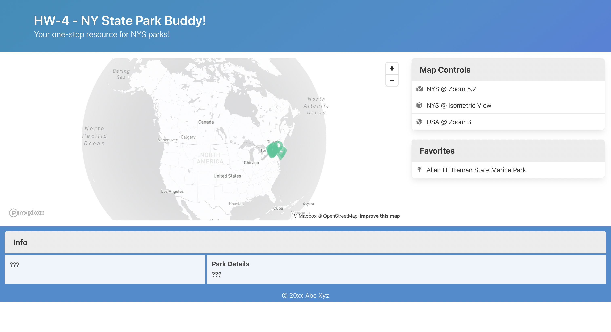
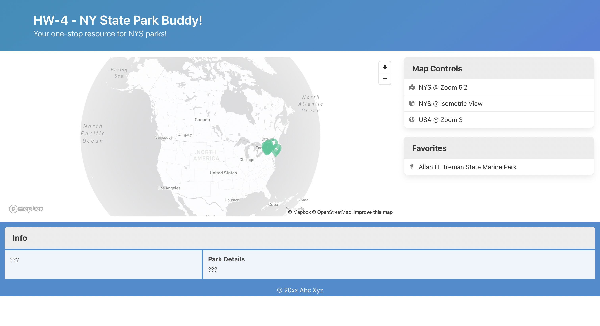

Figma Student Calender

 

Role: Project Manager and Programmer
Languagues Used: HTML, Javascript, CSS
Programs Used: Firebase, AJAX, Visual Studio Code, Github
What is the purpose of this application: This application is meant to allow you to search and categorize the state park for New York. You should be able to see the parks geographical location on a map, and able to click on them for a detail. You can favorite parks that you would want to visit, or ones that you particularly enjoy.
What was the design process:
What did I learn in this design process: I learned hot to use a firebase server to create coding persistance between sessions. I learned how to connect JSON data through firebase. I learned how to impliment AJAX in a programming project. (USE BETTER WORDING HERE)
View ProjectView Github Page